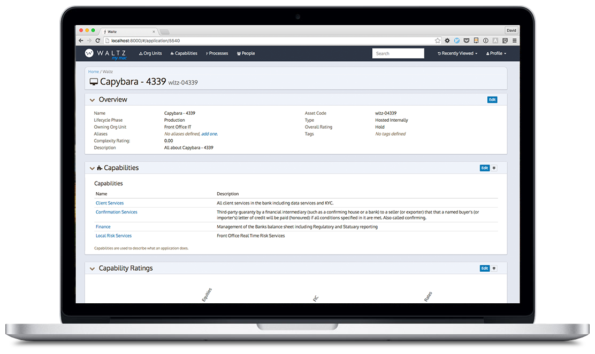
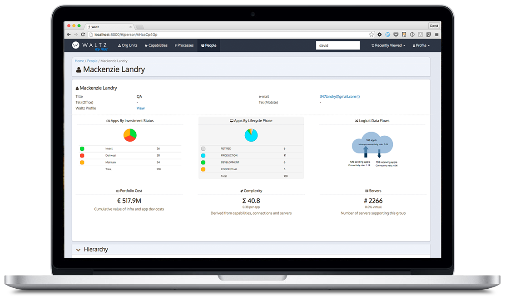
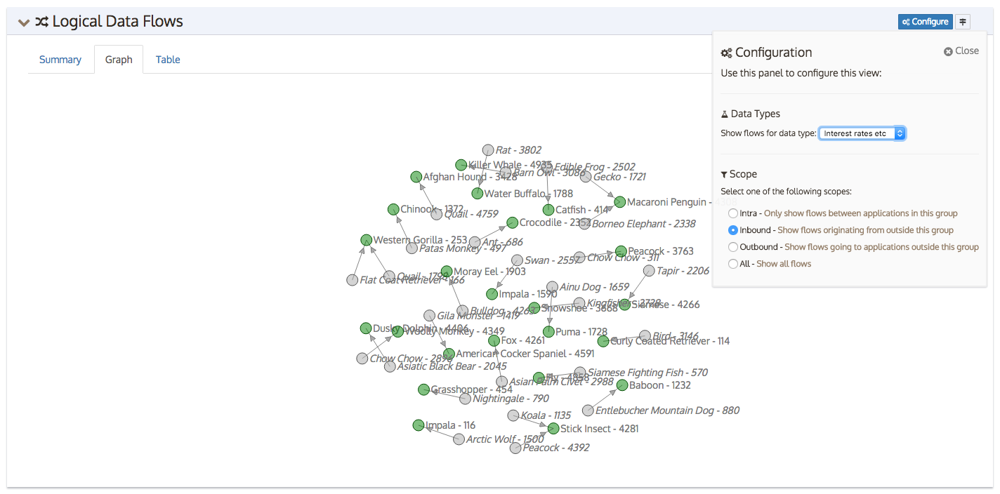
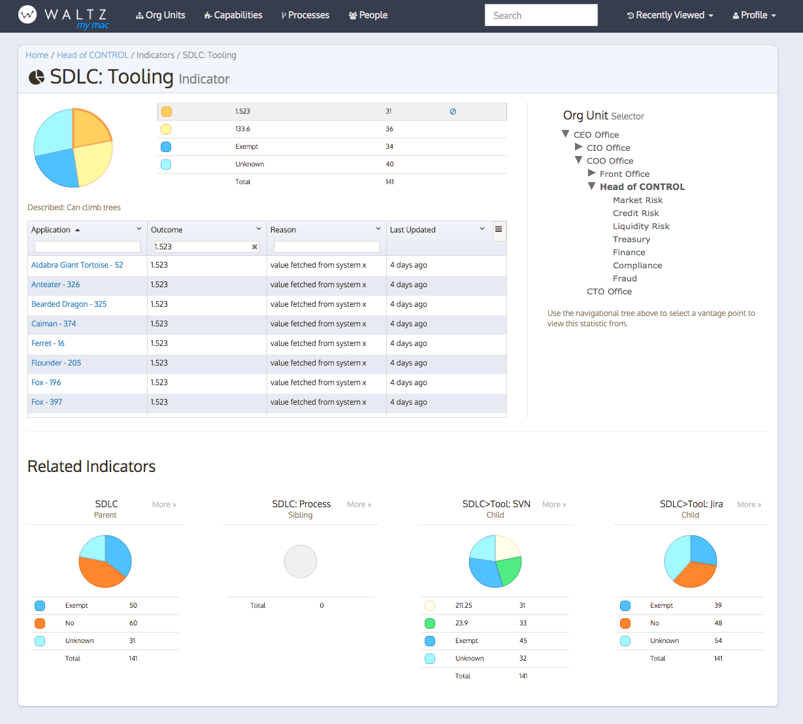
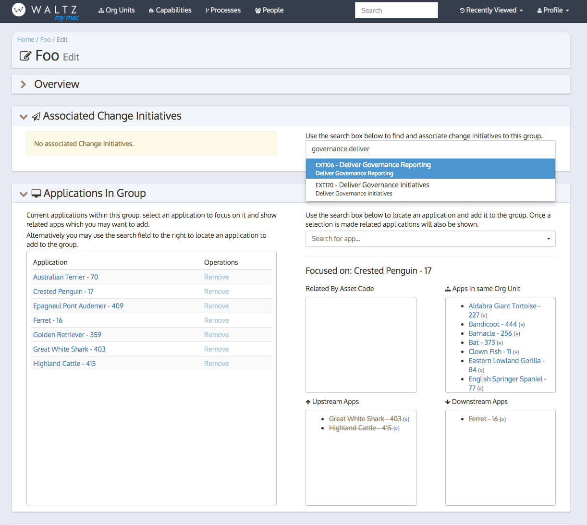

See your applications
Waltz presents data about your application. Applications
can be linked to capabilities, organisational units, people,
servers, data types and more. Once linked, the data
is displayed and relationships can be navigated.
Information in Waltz can be augmented manually to increase the
value, comprehensiveness and accuracy of your application views.

Aggregate Views
Once applications have been linked to entities (such as
organisational units, people and capabilities) you can
navigate through dynamic views which show aggregate summaries
of related applications etc.
 See how an application is connected
See how an application is connected
How an application is connected to other applications in your organisation
is a central part of Waltz. We can describe upstream and downstream
applications along with the data types exchanged.
As this topology is created you may start to define authoritative sources
for datatypes and see which applications are sourcing their data from approved
golden sources.

See how your organisation is connected
Building upon an individual applications connections we can start to
view how applications are connected when they are aggregated.
If authoritative sources have been defined a organisational-unit level
scorecard is produced showing what proportion of your logical data
flows are being sourced from strategic systems.

Statistics
Define your own sets of statistic definitions and then
use Waltz to navigate though the collected values
using the structural entities relevant to you.

Create and share custom groups
Waltz allows you to create custom, ad-hoc groups of applications. This
feature is often used to quickly understand a subset of your application
portfolio. For instance you may wish to create a group containing
SOX relevant applications.